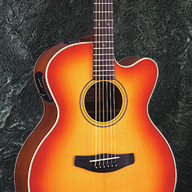
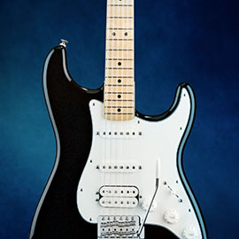
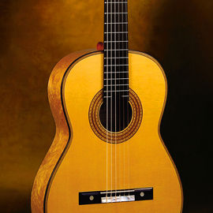
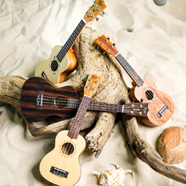
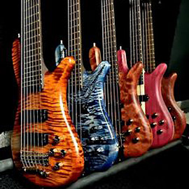

Гита́ра — струнный щипковый музыкальный инструмент. Применяется в качестве аккомпанирующего или сольного инструмента во многих стилях и направлениях музыки, среди которых романс, блюз, кантри, фламенко, рок, джаз. Изобретённая в XX веке электрическая гитара произвела значительные изменения в музыке и тем самым оказала сильное влияние на массовую культуру. Также есть классическая гитара, гитара фламенко, испанская гитара и некоторые другие виды.
| Название | Тип | Цена |
|---|---|---|
| FLIGHT F-230C NA |  | 11 360 руб. |
| ROCKDALE Aurora D1 C BK | 7 700 руб. | |
| IBANEZ GRG121DX-BKF |  | 23 000 руб. |
| IBANEZ GRX70QA-TRB | 22 400 руб. | |
| FENDER SQUIER Affinity 2021 Stratocaster HH LRL Olympic White | 37 000 руб. | |
| VESTON C-45A BK |  | 6 620 руб. |
| Denn DCG390 | 4 667 руб. | |
| ROCKDALE Modern Classic 100-N 3/4 | 5 523 руб. | |
| LAVA ME 2 Acoustic White | 56 000 руб. | |
| FENDER PLAYER Stratocaster PF 3-Tone Sunburst | 98 000 руб. | |
| KALA KA-15S Kala Mahogany Soprano Ukulele No Binding |  | 4 500 руб. |
| IBANEZ GSR200B-WNF |  | 25 500 руб. |